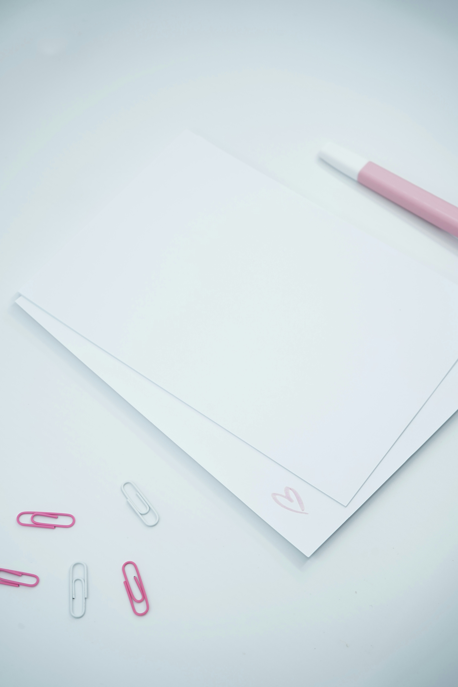
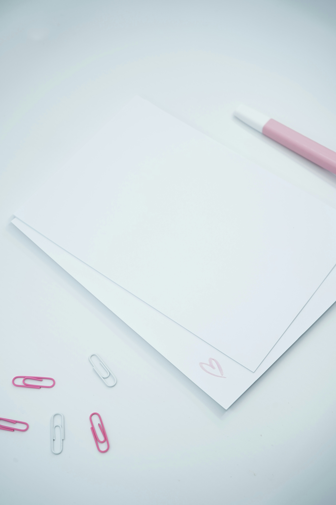

My Personal Projects:
Graphic designing
I also work As a graphic designer, I am passionate about creating beautiful and effective designs that
communicate my
clients' messages.
I take pride in my attention to detail and ability to create designs that are both
visually appealing and functional.
I enjoy the creative process of working with clients to bring their
ideas to life, and I'm always looking for new ways to challenge myself and grow as a designer.
Seeing A Tip Of My Designs
Gallery Designs
By the road,where flowers bloom,and trees stand tall, I walk with awe
and love it all.The sweet scentof
blooms so fair,the lush leavesthat dance in air.
The road aheadI cannot see,but 'round each bend is
beauty
free. The journey on I'll take with glee,'til flowers fade and leaves fall free.The road ahead,
I'll travel still, with flowers bright
and leaves fall to the ground,the memories I've made today, will always be around.I'll carry them within
my
heart,
a treasure to behold,to cherish when we're far apart, when seasons come and go.And as I walk this road of
life,
I'll take each step with grace,knowing that each moment's rife with beauty, love, and faith.
I'll keep these memories close to me,as seasons come and go,
Recipe For Chicken Pot Pie
You'll need chicken, vegetables like carrots and peas, and some herbs like thyme and rosemary.
You'll
also
need a few pantry staples like flour, butter, and chicken broth.
First, you'll need to preheat your oven to 350 degrees. Then, you'll need to cook your chicken in a
skillet
until it's browned on all sides. Once the chicken is cooked, remove it from the skillet and set it
aside.
Then, you'll need to cook your vegetables in the same skillet until they're tender. After the
vegetables
are
cooked, you'll need to add the chicken back to the skillet, along with the chicken broth, flour, and
herbs.
Stir the mixture until it's thickened, and then pour it into a pie dish.
Now, you'll need to make the crust! You can either use a store-bought crust, or you can make your
own.
If
you're making your own crust, you'll need to combine flour, salt, and butter in a bowl.
Then,
you'll
need to
add cold water and mix until the dough comes together. Once the dough is ready, you'll need to roll
it out
and place it over the top of the pie dish. Finally, you'll need to bake the pie for about 30
minutes, or
until the crust is golden brown. And that's it! You'll have a delicious chicken pot pie.
 
